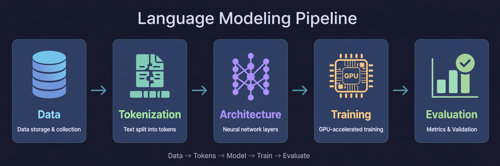
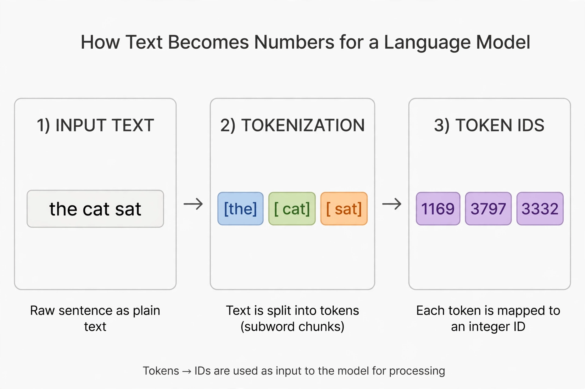
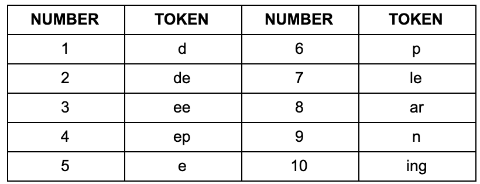
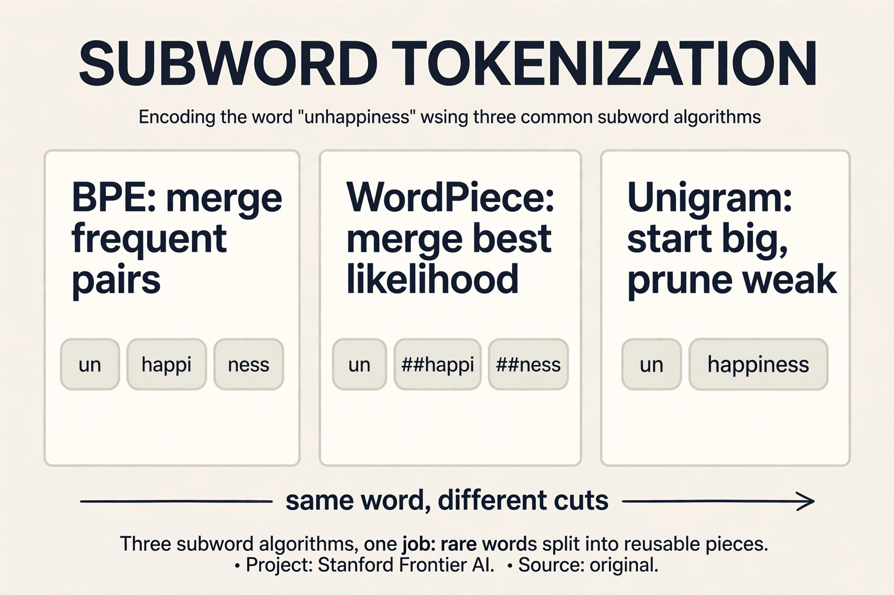
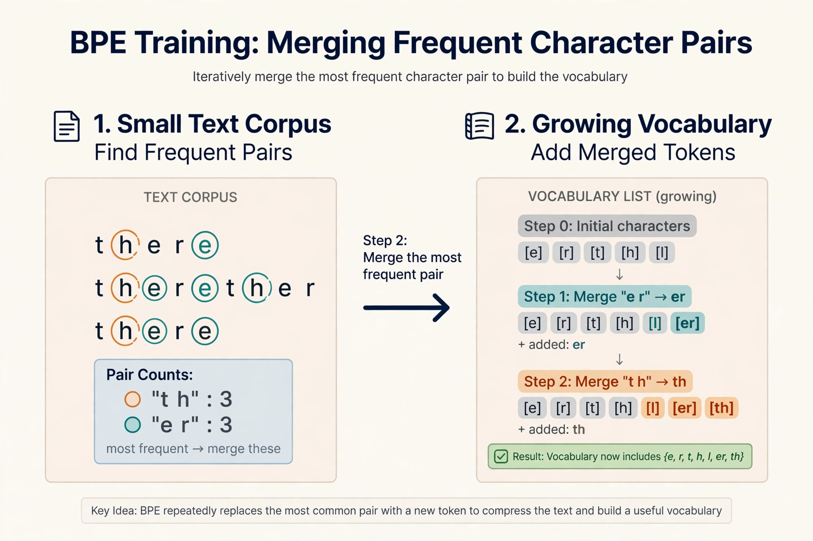
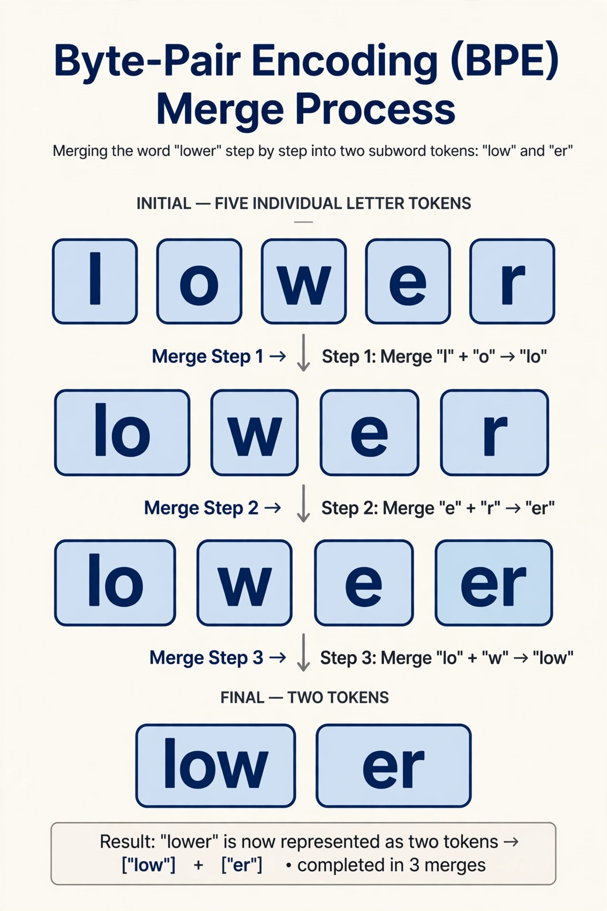
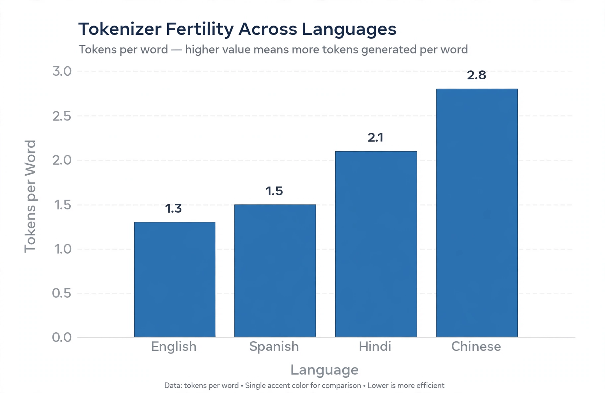
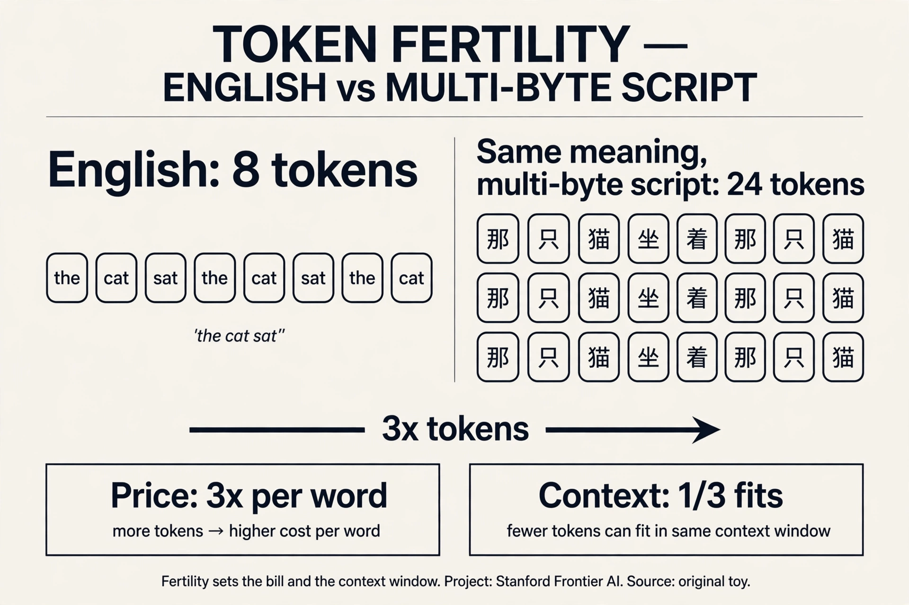
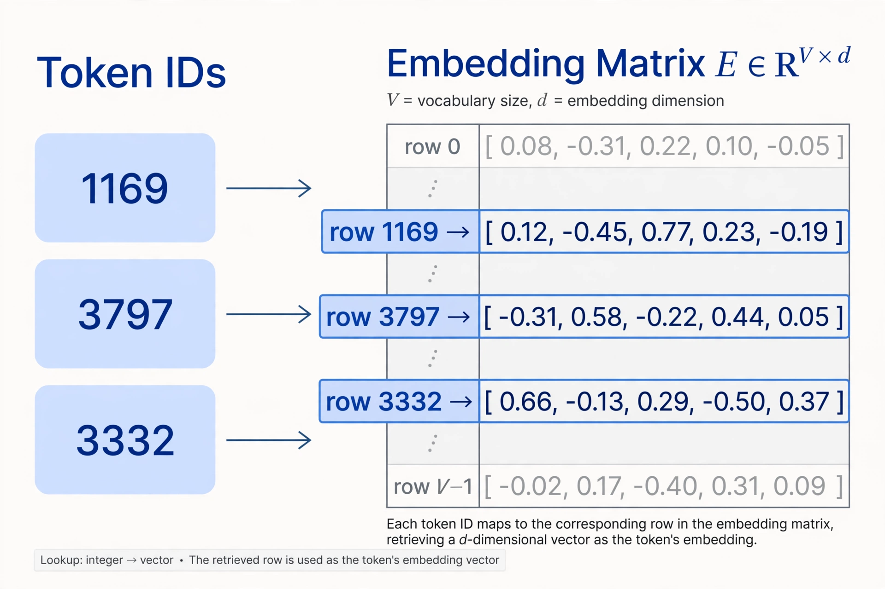
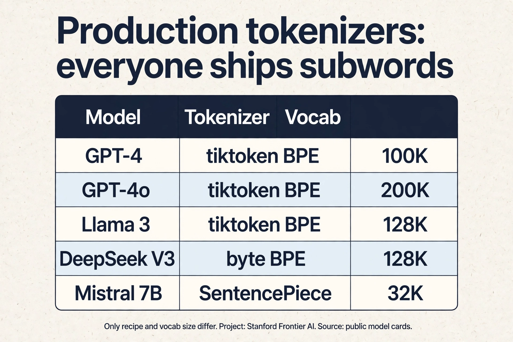

Lecture 1: The Language Modeling Pipeline and Tokenization
Video blocked (ad-blocker or local file mode).
Watch on YouTubeVideo not loading? Watch on YouTube
Original lecture. Percy Liang introduces the course, presents the language modeling pipeline, and derives tokenization.
How to read this lesson
This lesson has two levels. Level 1 (Core) contains what you need to understand everything that follows in all 12 courses. Level 2 (Deep) contains what you need for correct, interview-grade understanding. Read Level 1 straight through. Return to Level 2 when you want depth.
No prerequisites are assumed. Every term is defined at first use.
Level 1: Definition of language modeling
The model must score sentences. “The cat sat” should get a high number. “Cat the sat the” should get a low one. A language model is the machine that assigns these numbers: a probability distribution over sequences of tokens.
Given a sequence, it assigns a probability to each possible next token.
Formally, for tokens x_1 through x_n, the model defines P(x_1, …, x_n). By the chain rule, this equals the product of P(x_t | x_1, …, x_{t-1}) over all positions t. Training means learning these conditional distributions from data.
The definition raises the first question of the course. What is a token? The answer is tokenization, derived below.
Level 1: The language modeling pipeline
Building a language model requires five stages in order.

Data. The training corpus determines model behavior. Data reflects the desired capabilities. Large datasets require active curation.
Tokenization. Raw text becomes integer sequences. Derived in full below.
Architecture. The transformer maps token sequences to predictions.
Training. Optimization over billions of parameters. Learning rate schedules and batch sizes determine stability.
Evaluation. Perplexity measures prediction quality on held-out text. Benchmarks test specific capabilities.
Two concerns span all stages. Systems: data movement dominates GPU cost. Scaling laws: hyperparameters must adapt as compute grows.
Data collection, tokenization, architecture, training, and evaluation. Data determines the ceiling of model quality. Tokenization converts text to integers. Architecture is the transformer. Training optimizes billions of parameters. Evaluation uses perplexity and benchmarks. Systems engineering and scaling laws cut across all five stages. Data. The corpus sets the upper bound on what the model can learn. Architecture and training determine how close the model comes to that bound. A common interview trap is to overemphasize architecture. In practice, data quality moves results more than architectural tweaks. Frontier labs invest heavily in data pipelines for this reason.
Level 1: Tokenization, the problem
The model computes on integers. Text is not integers. Something must convert between the two, and the conversion must be exact: decode what you encoded and you get the input back, character for character. That something is tokenization.
It performs encoding (text to integers) and decoding (integers to text). The mapping must be invertible: decoding an encoding returns the input exactly.

The design question: what should one integer represent? Try it yourself.
Level 1: Character-level tokenization
Each character maps to one integer. Vocabulary: approximately 100 entries. The mapping is trivial.
It fails on sequence length. “the cat sat on the mat” is 22 characters, hence 22 integers. A 4,096 integer window holds about 186 such sentences. Subword schemes fit four times more text in the same window.
text : t h e c a t s a t o n t h e m a t ints : 20 8 5 0 3 1 20 0 19 1 20 0 15 14 0 20 8 5 0 13 1 20 count: 22 integers for 6 words. Fertility 3.7.
The model must also learn spelling before meaning, which wastes capacity.
Sequences grow 4 to 5 times longer than subwords, which shrinks the effective context window proportionally. The model must learn orthography before semantics, wasting capacity on a solved problem. No frontier model uses character tokenization in production. When spelling is the signal: typo correction, rare scripts, or character-level adversarial robustness. Some research models use bytes for these tasks. In production, the context cost dominates, so subwords win.
Level 1: Word-level tokenization
Each word maps to one integer. Sequences are short. Each integer carries meaning.
It fails on vocabulary size. English plus names, typos, and code exceeds one million words. Each entry needs a learned representation. Rare words get no training signal.
Related forms share nothing: “run” and “running” are unrelated integers. New words have no integer at all.

Three failures. Vocabulary exceeds one million, which costs memory and starves rare words. Morphological variants share no representation, so learning does not transfer. Out-of-vocabulary words collapse to an unknown token, destroying information. A BPE vocabulary holds about 50,000 entries. A word vocabulary for English plus code exceeds 1,000,000, a 20 to 1 ratio. Most word entries would appear a handful of times in training, so their representations stay near random. The embedding matrix alone would dominate model memory.
Level 1: Subword tokenization
Split words into frequent chunks. “running” becomes [“run”, “ning”]. Common words stay whole. Rare words split into known pieces.
running -> [run][ning] rare word, two chunks the -> [the] frequent word, one chunk runningly -> [run][ning][ly] unknown word, still representable
Vocabulary stays near 50,000. Sequences stay short. Related forms share chunks, so learning transfers.
The algorithm is byte pair encoding (BPE). It learns chunks by merging frequent pairs.
A character sequence between a character and a word, learned from corpus statistics. Frequent words remain whole. Rare words decompose into reusable pieces. Vocabulary lands near 50,000 entries. BPE training counts adjacent pairs across the corpus and merges the most frequent ones. Split points fall where pairs are rare. The procedure is deterministic given the corpus and merge count.
Subchapter: the subword family (BPE, WordPiece, Unigram)
BPE is one of three subword recipes. All three split rare words into reusable pieces. They differ in how they learn the piece set.
BPE grows the vocabulary. Start from bytes. Merge the most frequent adjacent pair. Repeat until the target size. The rule is frequency: the pair that appears most wins. “th” and “he” merge early in English. Rare pairs never merge.
WordPiece also grows the vocabulary. It starts from characters, but the merge rule is different: merge the pair that most increases the training data’s likelihood, not the pair with the highest count. A pair that appears often but is predictable scores lower than its raw count suggests. BERT ships WordPiece with a 30,522 vocabulary. Its “##” prefix marks pieces that continue a word: “unhappiness” becomes “un”, “##happi”, “##ness”.
Unigram goes the other way. It starts with a huge vocabulary (all frequent substrings) and prunes: fit a unigram language model, drop the pieces whose removal hurts the total likelihood least, repeat until the target size. The segmentation is probabilistic: the same word can split in several ways, and the tokenizer picks the most likely one. T5 uses SentencePiece Unigram with a 32,000 vocabulary.
Why did BPE win the LLM era? Three reasons. It is byte-level, so no unknown token exists. It is deterministic, so train and inference always agree. And it is simple to implement at scale, which matters when you retrain tokenizers on terabytes of new data. WordPiece stays strong in encoder models (the BERT family). Unigram stays strong where probabilistic segmentation helps, like multilingual T5.
Worked toy. Corpus: “low lower lowest”. BPE counts pairs: “lo” appears 3 times, “ow” appears 3 times. Say “lo” merges first, then “low”. The vocabulary gains “lo”, then “low”. WordPiece scores pairs by likelihood lift, not count: merging “lo” + “w” into “low” explains “low”, “lower”, “lowest” in one piece, so its likelihood jump is large and it merges early. Unigram starts with every substring, then prunes pieces like “lowes” whose removal barely changes the likelihood. Same corpus, three different vocabularies. Three different splits of “lowest”.

Take “unfamiliarity” with a trained BPE vocabulary. The encoder walks left to right and applies greedy longest match against the fixed merge list. Suppose the vocabulary contains “un”, “fam”, “ili”, “ar”, “ity”. Position 0: “un” matches, the longest match, since “unf” is not in the vocabulary. Position 2: “fam” matches. Position 5: “ili”. Position 8: “ar”. Position 10: “ity”. Output: [“un”, “fam”, “ili”, “ar”, “ity”]. The word never appeared in training, yet every piece did, so the model receives five known IDs instead of one unknown token. That is the whole point of subwords: represent anything with pieces. Speed. Greedy matching is linear in text length. Searching all splits is exponential, and the gain is small: BPE merges were learned greedily too, so the vocabulary is shaped to make greedy splits good. The interview signal is the tradeoff: near-optimal correctness at linear cost.
Level 1: BPE training
Start with 256 byte tokens. Repeat: find the most frequent adjacent pair, merge it into a new token. Stop at the target vocabulary size.
Worked example on “lower”:
Start: l, o, w, e, r. Merge (l,o) to “lo”. Merge (lo,w) to “low”. Merge (e,r) to “er”. Result: [low, er].


flowchart TD
A["Vocabulary = 256 bytes"] --> B["Count adjacent pairs in corpus"]
B --> C["Merge most frequent pair"]
C --> D["Vocabulary grows by 1"]
D --> E{"Target size?"}
E -- No --> B
E -- Yes --> F["Done"]
Level 1: BPE inference
Training runs once. Inference applies the vocabulary to new text with greedy longest match: at each position, take the longest matching token.
“lowest” with vocabulary containing “low” and “er” becomes [low, e, s, t]. Deterministic: same input always gives same output.
lowest : [low][e][s][t] pos 0 : longest match at "low..." is "low" (3 chars), not "lo" (2) pos 3 : "er" is in vocab but "est" is not; greedy takes "e"
Training learns the vocabulary by merging frequent pairs over a corpus, once, offline. Inference segments new text with greedy longest match against the fixed vocabulary, on every input, online. Training is expensive. Inference is fast. The model was trained on specific segmentations. If inference produced different splits, the model would see token sequences it never trained on, and predictions would degrade. Determinism guarantees train-inference consistency.
Level 2: Byte-level initialization
BPE starts from 256 bytes, not characters. Every Unicode string is a byte sequence, so any text is representable. No unknown token exists. The worst case falls back to single bytes.
"caf\u00e9" as UTF-8 bytes: [99][97][102][195][169]
Cost: multi-byte characters split into 2 to 4 tokens. Non-English text has higher fertility: more tokens per word, higher cost, shorter effective context.

Bytes guarantee universal coverage with zero unknown tokens. Characters would need an unknown token for unseen scripts. The tradeoff is fertility: rare characters split into multiple byte tokens. Languages with multi-byte scripts consume 2 to 3 times more tokens per word than English. This triples inference cost and shrinks effective context for those languages. Fertility measurement is standard when selecting tokenizers. Some labs train language-specific tokenizers to reduce this gap.
Subchapter: fertility, measured and priced
Fertility is tokens per word. It is the number that turns a tokenizer into a bill.
The lesson states English near 1.3. Work out what that buys. A 4,096 token context window holds about 3,150 English words (4,096 / 1.3). The same window in a language with fertility 3 holds about 1,365 words. The model reads less than half the document. Nothing about the model changed. Only the tokenizer’s fertility changed.
Price follows the same math. At $2.50 per million tokens, a 1 million word English corpus costs about 1.3M tokens, so $3.25. The same corpus at fertility 3 costs 3M tokens, so $7.50. The non-English user pays 2.3 times more for the same meaning.
Two levers reduce fertility. A bigger vocabulary covers more multi-byte sequences directly: Llama 3’s jump from 32K to 128K raised English compression from 3.17 to 3.94 characters per token (per the Llama 3 report). And tokenizer training data that includes the language: DeepSeek-V3 modified its pretokenizer and training data explicitly for multilingual compression efficiency. Both levers cost embedding memory: 128K entries times 4,096 dims is 524M parameters in the embedding table alone, against 131M at 32K. That is a 400M parameter price for better compression.

Level 2: The embedding interface
Each integer indexes a row of the embedding matrix. Token 1169 becomes a vector, for example 12,288 numbers. That vector enters the network.

Two invariants. The mapping is lossless. The tokenizer is fixed before training. Replacing it invalidates the model.
It controls cost and context. Pricing is per token, so fertility sets inference expense. Context windows count tokens, so the tokenizer decides how much text fits. Multilingual quality, code handling, and prompt injection surfaces all run through tokenization. Three directions are active. Lower fertility for non-English languages. Better handling of code and math, where current tokenizers split numbers awkwardly. And tokenizer-aware training, where the model learns with knowledge of merge structure. Each is a research area with interview relevance.
Subchapter: what is used where (production tokenizers)
Every frontier lab ships a subword tokenizer. Only the recipe and the size differ.
| Model | Tokenizer | Vocab | Source |
|---|---|---|---|
| GPT-4 / GPT-3.5 | tiktoken cl100k_base, byte-level BPE | 100K | OpenAI tiktoken |
| GPT-4o | tiktoken o200k_base, byte-level BPE | 200K | OpenAI tiktoken |
| Llama 3 | tiktoken-derived byte-level BPE, 28K added tokens | 128K | Llama 3 paper |
| Llama 2 | SentencePiece BPE | 32K | Llama 2 paper |
| Mistral 7B | SentencePiece BPE | 32K | Mistral release docs |
| DeepSeek-V3 | byte-level BPE, custom pretokenizer | 128K | DeepSeek-V3 tech report |
| Qwen 2.5 | byte-level BPE | 151,646 | Qwen 2.5 release |
| Gemma 2 | SentencePiece | 256K | Gemma 2 model card |
| BERT | WordPiece | 30,522 | BERT paper |
| T5 | SentencePiece Unigram | 32K | T5 paper |
| Claude | not public | unknown | Anthropic has not published it |
Read the trend. Vocabularies grew: 32K in 2022, 100K to 256K in 2024-2025. The growth buys compression: Llama 3’s 128K improved English compression from 3.17 to 3.94 characters per token over Llama 2’s 32K. The cost is embedding memory: 524M parameters for a 128K by 4096 table. The field moved from SentencePiece blobs to tiktoken-style byte-level BPE with merges baked into tokenizer.json. Byte-level won because multilingual coverage with zero unknown tokens beats everything else at scale.

Recap: the whole lesson on one screen
Eight ideas carry this lecture. Read each card. Say the core sentence out loud. If you can, you own the lesson.
A language model assigns a probability to every possible next token. The chain rule turns a whole sentence into a product of these small predictions.
Key: p(x1..xn) = product of p(xi | x1..xi-1)
Raw text becomes integer IDs. IDs become vectors. The model scores the next token. The winner decodes back to text. Tokenization is the first stage, and every later stage depends on it.
Key: text to IDs to vectors to scores to text
Character tokens make sequences very long. Word tokens make the vocabulary huge and break on new words. Both extremes cost you something real: speed or coverage.
Key: 26 letters vs 170,000+ English words
Byte-pair encoding starts from single characters. It counts which pairs sit together most often and merges the winner into one token. Repeat. Common words become single tokens. Rare words stay split.
Key: GPT models use about 50,000 merges
Training counts pairs across a large corpus. The most frequent pairs become tokens. The corpus decides the vocabulary, so a mostly-English corpus gives English-friendly tokens and punishes other languages.
Key: dominant language in data wins the vocabulary
At inference time the tokenizer walks the text and takes the longest vocabulary entry that matches. It is fast and simple. It is not optimal: a global optimizer would sometimes split words differently.
Key: greedy, not optimal
Fertility is tokens per word. English sits near 1.3. Some languages need 3 or more. You pay per token and your context window counts tokens, so fertility decides both your bill and how much text fits.
Key: tokens per word. English ~1.3
Each integer ID picks one row of a learned matrix. That row is a vector, thousands of numbers wide. The mapping is lossless: the same text always gives the same IDs.
Key: 50k vocab x 12k dims is a huge matrix
Official sources and further reading
Official: - Hugging Face LLM Course, Chapter 2: the canonical visual introduction. - Karpathy, “Let’s build the GPT Tokenizer”: builds BPE from scratch in code. - Sennrich et al. (2016): the original subword paper for translation. - tiktoken repository: OpenAI’s production tokenizer.
Further reading: - Hugging Face tokenizers documentation: implementation details and speed benchmarks. - “Tokenizers: How machines read” (FloydHub): the word-level visual used above.
Caveats from these sources. BPE is greedy, not optimal: longest match can split words in ways a global optimizer would avoid. Tokenizer training data biases the vocabulary toward the dominant language of the corpus. Numbers tokenize inconsistently: “123” may split differently from “124”, which hurts arithmetic. These are known limitations, not bugs.
Connections to the other courses
- CS224N: word vectors assumed word tokens. Subwords changed the input representation.
- CS336 later lectures: the embedding matrix size depends on vocabulary. Inference cost scales with fertility.
- CS329A: test-time compute counts tokens. Verification granularity interacts with token splits.
- Math foundations (new): probability distributions in the definition require measure theory. The chain rule is proved there.
Tokenization cheatsheet. Definition: probability distribution over token sequences, chain rule factorization. Pipeline: data, tokenization, architecture, training, evaluation. Granularities: characters (vocab 100, 5x too long), words (vocab 1M+, no sharing), subwords (vocab 50K, best of both). BPE: 256 bytes, merge frequent pairs, 50K target. Inference: greedy longest match, deterministic. Bytes: universal coverage, fertility cost for non-English. Invariants: lossless, fixed before training.
BPE as compression. Frequent patterns earn short codes. Merge order is a frequency ranking. Count pairs, merge the winner, repeat 50,000 times.
Sources
- VIDEOLecture 1 video, Stanford Online YouTube
- NOTESOfficial subtitle transcript (en-US)
- CODElecture_01.py, executable lecture code
- SUPPLEMENTHugging Face LLM Course, Chapter 2: Tokenization
- SUPPLEMENTKarpathy: Let's build the GPT Tokenizer (video)
- PAPERSennrich et al., Neural Machine Translation of Rare Words with Subword Units (2016)